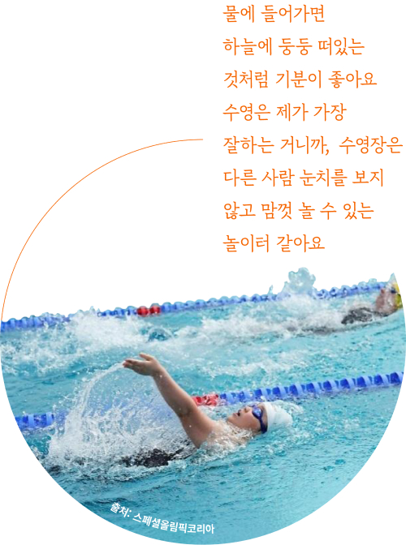
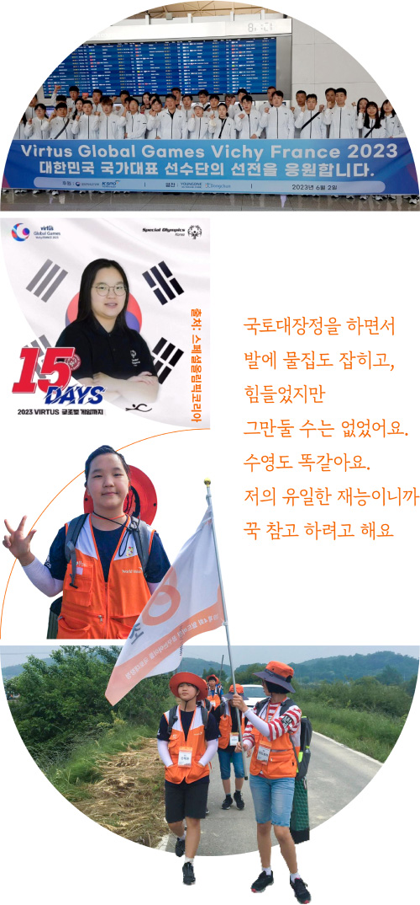
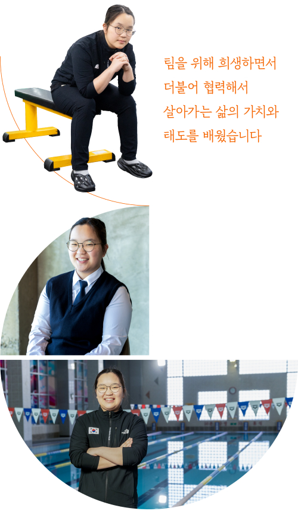

어릴 때부터 유난히 물을 좋아했던 아이는 이제 전국대회에서 메달리스트가 됐고,
장애인 수영 유망주로 성장했습니다. 커다란 고래 한 마리처럼,
이제 혜원이는 엄마 없이도 더 크고 넓은 세상으로 유영해 나갈 준비를 마쳤습니다.
어릴 때부터 유난히 물을 좋아했던 아이는 이제 전국대회에서
메달리스트가 됐고, 장애인 수영 유망주로 성장했습니다.
커다란 고래 한 마리처럼, 이제 혜원이는 엄마 없이도 더 크고 넓은
세상으로 유영해 나갈 준비를 마쳤습니다.
혜원의 놀이터, 물 속의 세상
혜원의 놀이터, 물 속의 세상

청주에서 만난 열아홉 살 혜원이는 ‘수영’이 좋은 이유에 대해 이렇게 대답합니다. 지적장애가 있는 혜원이는 현재 충청북도장애인수영연맹 소속 수영선수로
활동하고 있습니다. 수영은 혜원이와 엄마에게 각별한 의미이기도 합니다. 혜원이가 초등학교 4학년 때 겪은 학교폭력은 두 모녀를 더 그늘진 어둠 속으로
가뒀습니다. 위축된 어깨와 마음은 좀처럼 펼 수 없었고, 사람을 피해 숨는 일이 잦아졌습니다. 그런 혜원이를 오래전부터 지켜봤던 특수학급 선생님은
엄마에게 방과 후 수영수업을 추천했습니다.
청주에서 만난 열아홉 살 혜원이는 ‘수영’이 좋은 이유에 대해 이렇게 대답합니다.
지적장애가 있는 혜원이는 현재 충청북도장애인수영연맹 소속으로 수영선수로 활동하고 있습니다. 수영은 혜원이와 엄마에게 각별한 의미이기도 합니다. 혜원이가
초등학교 4학년 때 겪은 학교폭력은 두 모녀를 더 그늘진 어둠 속으로 가뒀습니다. 위축된 어깨와 마음은 좀처럼 펼 수 없었고, 사람을 피해 숨는 일이
잦아졌습니다. 그런 혜원이를 오래전부터 지켜봤던 특수학급 선생님은 엄마에게 방과 후 수영수업을 추천했습니다.
수영이 심어준 긍정적 힘
수영이 심어준 긍적적 힘
초등학교 5학년서부터 본격적으로 수영을 시작한 혜원이는 곧바로 두각을 나타내기 시작했습니다. 수영을 시작한 지 1년 만에 전국대회에 출전해 지금까지 주 종목인
배영과 접영 두 종목에서 딴 금메달 개수만 10개가 넘습니다. 각종 대회에 나가 메달을 따고, 개인 기록도 꾸준히 경신했습니다. 눈에 보이는 성과가 나타나자
자신감도 높아지기 시작했습니다. 슬픈 일을 잊기 위해 시작했던 수영은 어느새 혜원이에게 운명처럼 다가왔습니다. 엄마는 지금도 혜원이가 수영으로 처음 상을 받던
날을 또렷이 기억합니다. 눈앞에서 혜원이가 당당히 단상 가장 높은 곳에서 메달을 목에 걸 때, 엄마는 기쁨과 회한으로 소리 내어 울었습니다.
홀로 혜원이를 키우는 엄마는 수영을 통해 막막했던 삶에 한 줄기 희망을 보았습니다. 무엇보다 중요한 건 혜원이는 수영을 계속하게 되면서, 스스로 살아갈 힘을
얻었다는 것입니다. 혜원이는 이제 엄마 없이도 낯선 경기장에서 자신 있게 입수해 물속을 누비고, 반환점을 정확히 기억하고 돌아와 다른 선수들의 도착을 기다리는
의젓한 선수로 성장했습니다.
국토대장정 도전으로
마음 지구력 ‘탄탄’
국토대장정 도전으로 마음 지구력 ‘탄탄'
최근 프랑스 비시에서 열린 2023 버투스(Virtus) 글로벌 게임에서 가슴에 태극마크를 달고, 본선 7등이라는 기록도 세웠습니다. 이 대회는 전 세계 발달
장애인들이 참가하는 스포츠 종합 대회입니다. 엄마는 ‘몇 등’이라는 결과가 아니라 아이가 성장하는 모든 순간이 소중하다는 말을 전했습니다. 몇 해 전 월드비전
꿈꾸는아이들 국토대장정에 참여한 것도 이 때문입니다.
혜원이는 운동뿐만 아니라 마음 지구력도 단단해진 모양이었습니다.

잘하는 일+좋아하는 일
=혜원이의 꿈
잘 하는 일+좋아하는 일=혜원이의 꿈
혜원이는 가장 기억에 남는 경기로 첫 단체전 경기를 꼽았습니다. 그간 충북지역에 여자 수영선수가 부족했는데, 지난해 4명의 선수가 꾸려져 혜원이는
전국장애학생체전에서 처음으로 계영을 뛰었습니다. 이 경기에서 혜원이의 짜릿한 역전으로 충북팀은 은메달을 이루는 쾌거를 이뤘습니다. 엄마는 “단체전을 뛰면서
혜원이 보다 기량이 부족한 선수도 기다려주고, 또 팀을 위해 희생하면서 더불어 협력해서 살아가는 삶의 가치와 태도를 배웠다”고 말합니다. 이런 엄마의 가르침이
있었기 때문일까요? 혜원이는 스스로 소아암 환자를 위해 머리를 길러 모발 기부에도 2번이나 참여했습니다. “제가 아직 금전적으로 도움이 될 수 없으니까 할 수
있는 일을 고민하다가 참여했어요. 진짜 뿌듯했어요.”

혜원이는 자신이 가장 잘하는 ‘수영’과 가장 좋아하는 음식인 ‘빵’을 접목해 ‘빵 굽는 수영선수’가 되고 싶다고 말했습니다.
혜원이는 언젠가 장애인 국가대표 수영선수로 패럴림픽에 출전해 가슴에 태극마크를 달고 경기를 펼치는 꿈을 꿉니다. 그리고 그 꿈을 이루고 나면 맛있는 빵을
만들어 주위의 어려운 사람들에게 선물하고 싶다는 귀여운 꿈을 이야기합니다. 세상 무해하고 따뜻한 혜원이가 굽는 빵은 어떤 맛일지, 그 맛이 벌써부터
기다려집니다. 빛나는 성취와 영광을 툭툭 털어내고 내일로 걸어가는 것. 경계 밖의 세상으로 힘차게 헤엄칠 혜원이의 미래는 전혀 두렵지 않습니다.